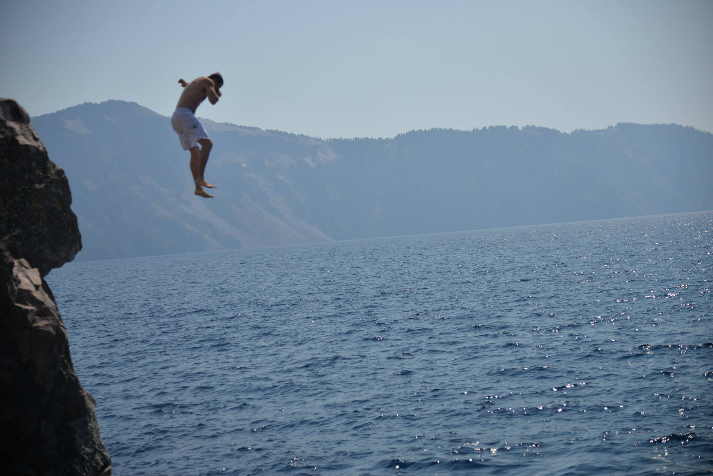
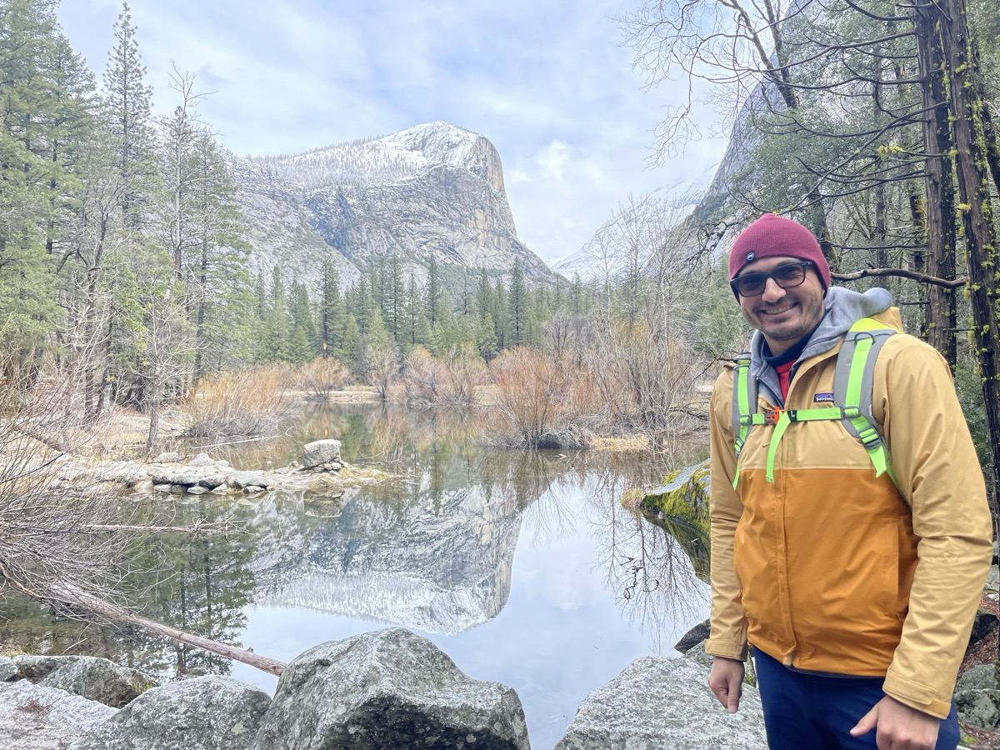
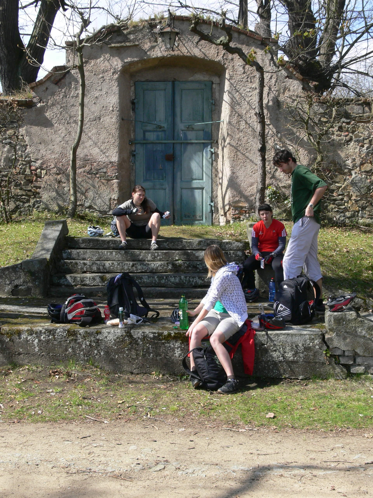
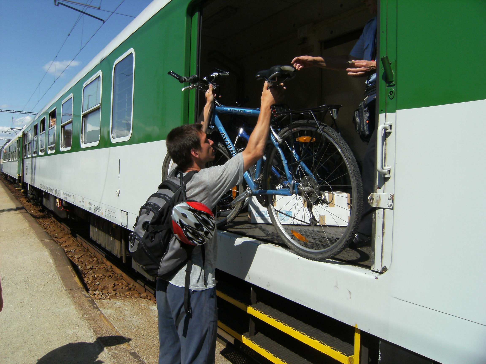
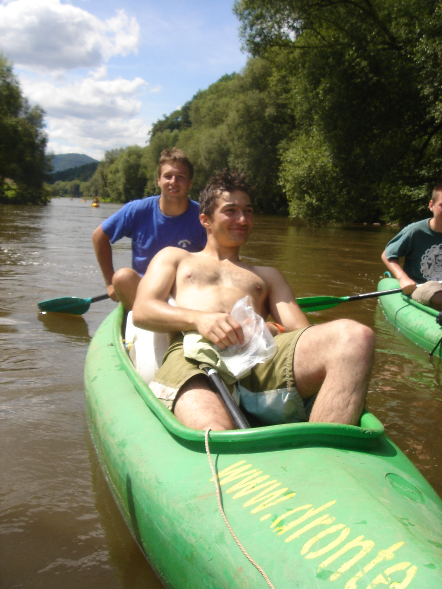
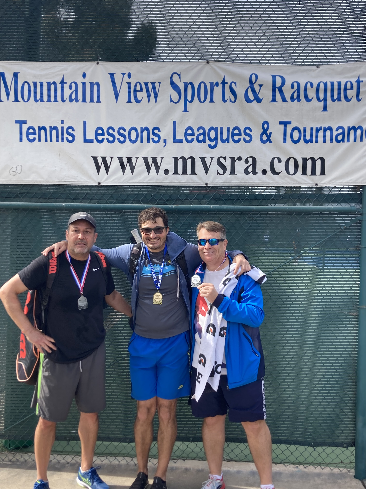
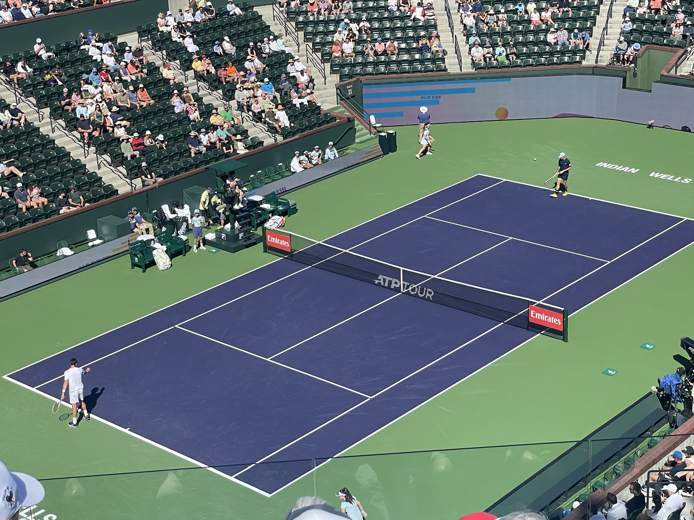
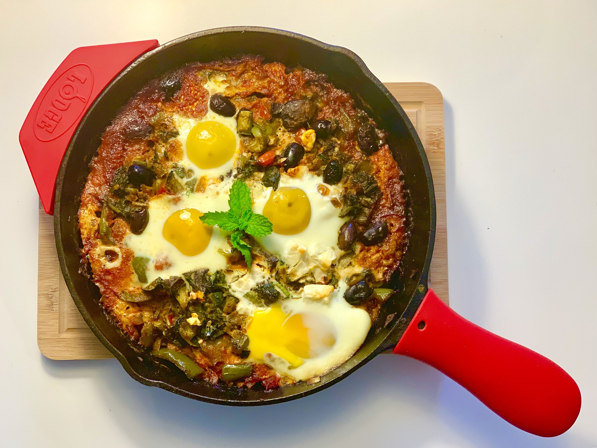

I believe the best work comes from people who take their craft seriously and their hobbies just as seriously. These are the things that keep me sharp, grounded, and honest.

I started snowboarding as a teenager in the Czech Republic and never stopped. In my last year of high school, I worked as a snowboarding instructor—another form of teaching, another way of learning how to read people and adapt in real time. There is something about standing above the cloudline that recalibrates your sense of scale. The mountains have been a constant, from the Alps to the Cascades.


My undergraduate classmates in Prague got me into hiking, and I didn’t fully appreciate it at the time. But people kept pushing me in Seattle—the Pacific Northwest has a way of doing that, with its rain and its mountains and its forests that seem to go on forever. I read Alex Soojung-Kim Pang’s Rest and Shane O’Mara’s In Praise of Walking, and what had been a casual activity became an intentional practice.
Since then I have hiked through Yosemite, Yellowstone, Olympic National Park, Sequoia, Crater Lake, Big Sur, and more national forests than I can list without it sounding like a checklist—Mt. Baker, San Bernardino, Angeles, Cleveland, Los Padres, Santa Monica Mountains. Lake 22, Blanca Lake, Lake Cuyamaca, Cuyamaca State Park. The point is not the list. The point is that walking in silence through a landscape that predates everything you worry about is the most reliable way I know to think clearly.

After the Velvet Revolution, Czechs were eager to travel. But something about the way people traveled puzzled me. They didn’t read about the lands they were visiting. They didn’t study the language, interact with locals, taste the food, or step out of their comfort zone. And yet these same people had never explored what was around them—the chateaus, the castles, the landscapes, the history woven into every valley of their own country.
So in 2010 I designed Panďulák—a two-day cycling treasure hunt through the Central Bohemian countryside. I wrote a 23-page manual covering the history, geology, and legends of each location. I mapped routes, calibrated distances, designed puzzles rooted in the history of the places the teams would pass through, and balanced the challenge across different paths so no team had an unfair advantage. I arranged accommodations, timed the routes so breakfast-to-lunch was filled exactly with activities, cross-referenced train schedules for the return, and made sure there were facilities along the way.

The idea was simple but the execution was not: combine exercise (bikes), meaningful relationships (shared adventure), and intellectual engagement (history, puzzles, discovery). I wanted people to travel better—to recreate in a way that was physically, socially, and intellectually nourishing. Years later I would learn that research confirms shared experiences as a powerful mechanism for bonding. At the time, I just knew it felt right. The participants were a motley crew of college friends, high school classmates, and friends of friends. None of them had seen these places before. All of them remembered the trip.

The same impulse led to other expeditions—like a multi-day canoeing trip down Czech rivers, paddling from camp to camp with barrels of luggage strapped to the boats. Czechia has a unique infrastructure for this: water camps spaced roughly fifteen miles apart, built for exactly this kind of slow, river-paced travel. I made sure we used it.
Tennis is life played on a short reel. Every point is a chess match married with a cardio workout—a boxing match where the punches are slices and topspins, and the rounds last thirty seconds. You have to know when to explode but also how to channel that explosive energy into an exact shot, the exact technique, the right placement, the right spin. Power without control is a cannon without the barrel—a means of self-destruction. Control without power is pulling the trigger only to realize you’ve run out of bullets. You’re pressing, pressing, but all you hear is clack clack.
It is also poker. You are playing a person, and you get to know them through each point. What are their weaknesses? What are their tactics? How is their mental game? Every rally is an experiment: you form a hypothesis, test it with a shot, and adjust. The feedback loop is immediate and unforgiving.
I think about tennis the way I think about research—as a system of nested problems. The individual shots are the pieces on the board. Knowing when to play each one is strategy. Reading your opponent is adaptive inference. And the mental game—staying present under pressure, not spiraling into the stakes of the moment—is the hardest skill of all. Nadal understood this: the bottle positioning, the rituals, the grounding. Not superstition. Psychological architecture.


I read Christopher Clarey’s The Master and Nadal’s Rafa. I watched Strokes of Genius—the documentary that captures the tactical chess match between Federer and Nadal better than anything written about it. Nadal positioning himself as the underdog (“Federer is clearly better than me in terms of talent. I have to figure out a way to overcome that.”), the two of them waiting for the final to begin—Nadal bouncing like a swashbuckler, Federer gently swaying like the maestro he was. I visited the Indian Wells tournament in 2025 and watched Tommy Paul play Cameron Norrie from ten meters away. There is nothing like seeing world-class tennis live—the speed, the angles, the sound of the ball.
Tennis is health, psychology, performance, neuroscience, game theory, coordination of body and mind, of eyes and hands. It is the most complete activity I know.

Cooking is the most underrated form of systems thinking. You manage parallel processes with different time horizons, optimize under constraints, and iterate toward a result you can taste. I cook Tunisian food when I want to remember where I come from, Czech food when I want comfort, and everything else when I want to experiment.
In recent years I’ve gone deeper into fermentation—sparked by Giulia Enders, then William Davis’s Super Gut, then the Sonnenburgs’ The Good Gut and their conversation with Andrew Huberman. Like most things I care about, it started with curiosity and turned into a system.
My cooking bookshelf tells the story of how I think about food: Harold McGee’s On Food and Cooking for the science, Sandor Katz’s The Art of Fermentation for the living cultures, Ken Forkish’s Flour Water Salt Yeast for the patience, Marion Nestle’s Food Politics and Michael Pollan’s In Defense of Food for the systems, and Kenji López-Alt’s The Food Lab and Samin Nosrat’s Salt Fat Acid Heat for the craft. The kitchen is the one place where I am not looking at a screen, and that matters.